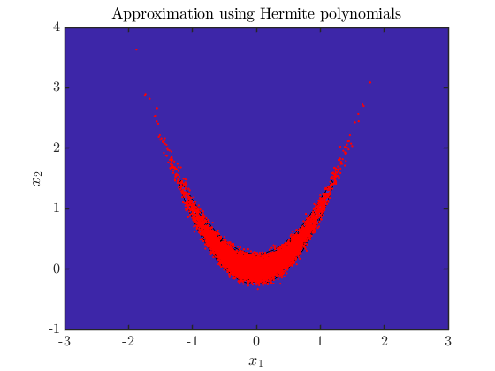
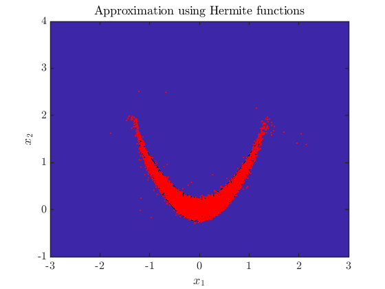

Contents
clear; close all; clc
addpath(genpath('../../src'))
sd = 2; rng(sd);
pi = Banana();
d = 2;
Build map using Hermite polynomials
N = 2000;
Z = randn(N,d);
basis = HermiteProbabilistPoly();
order = 2;
T = total_order_map(1:d, basis, order);
T = TriangularTransportMap(T);
PB = PullbackDensity(T, pi);
PB = PB.optimize(Z);
Plot joint approximation
Zeval = randn(1e4,2);
X_approx = PB.S.evaluate(Zeval);
xx = linspace(-3,3,100);
yy = linspace(-1,4,100);
[X1,X2] = meshgrid(xx,yy);
logpi_true = pi.log_pdf([X1(:),X2(:)]);
logpi_true = reshape(logpi_true, size(X1,1), size(X2,2));
figure
contourf(X1, X2, exp(logpi_true), 20)
hold on
plot(X_approx(:,1), X_approx(:,2), '.r','MarkerSize',2)
xlabel('$x_1$')
ylabel('$x_2$')
xlim([-3,3])
ylim([-1,4])
title('Approximation using Hermite polynomials')
set(gca,'FontSize',16)

Build map using Hermite polynomials
N = 2000;
Z = randn(N,d);
basis = ProbabilistHermiteFunction();
order = 7;
T = total_order_map(1:d, basis, order);
T = TriangularTransportMap(T);
PB = PullbackDensity(T, pi);
PB = PB.optimize(Z);
Plot joint approximation
Zeval = randn(1e4,2);
X_approx = PB.S.evaluate(Zeval);
xx = linspace(-3,3,100);
yy = linspace(-1,4,100);
[X1,X2] = meshgrid(xx,yy);
logpi_true = pi.log_pdf([X1(:),X2(:)]);
logpi_true = reshape(logpi_true, size(X1,1), size(X2,2));
figure
contourf(X1, X2, exp(logpi_true), 20)
hold on
plot(X_approx(:,1), X_approx(:,2), '.r','MarkerSize',2)
xlabel('$x_1$')
ylabel('$x_2$')
xlim([-3,3])
ylim([-1,4])
title('Approximation using Hermite functions')
set(gca,'FontSize',16)
